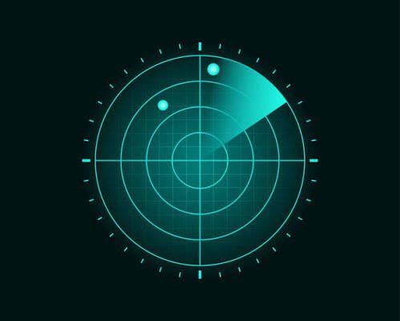
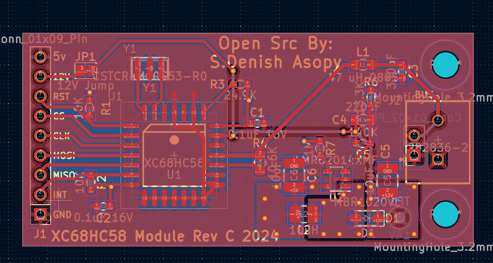

Engineering Projects
A showcase of personal engineering projects spanning aerospace, software, electronics, and systems

Crawler Radar System
A low-cost, portable distributed radar communication network providing resilient connectivity and sensing capabilities during infrastructure outages.
View Project →
AERIS Aviation Management System
Full-stack aviation management platform for operational, maintenance, and engineering workflows in aviation organizations.
View Project →
Class 2 Network Communication PDB
Power Distribution Board with integrated network communication capabilities for embedded systems and IoT applications.
View Project →
Fixed-Wing Surveillance Drone(Asopy Aircraft Design)
Conceptual fixed-wing surveillance drone with optimized aerodynamics, extended endurance, and autonomous flight capabilities.
View Project →